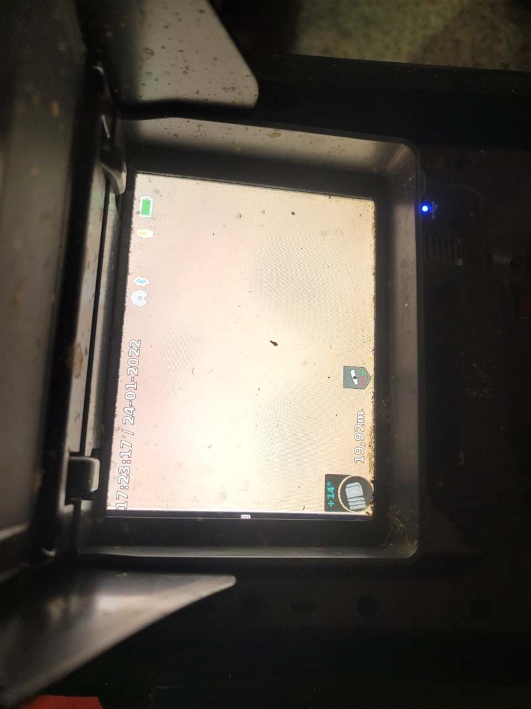
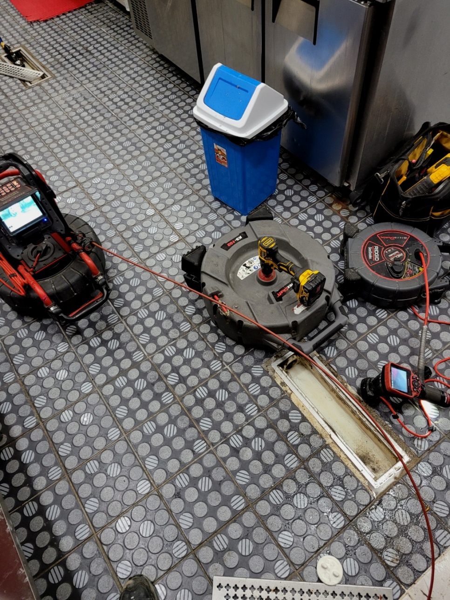
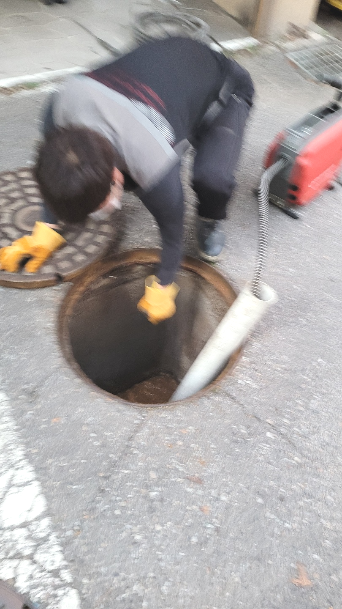
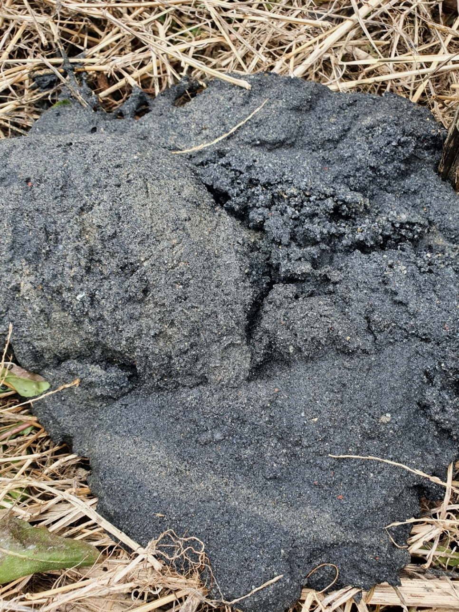
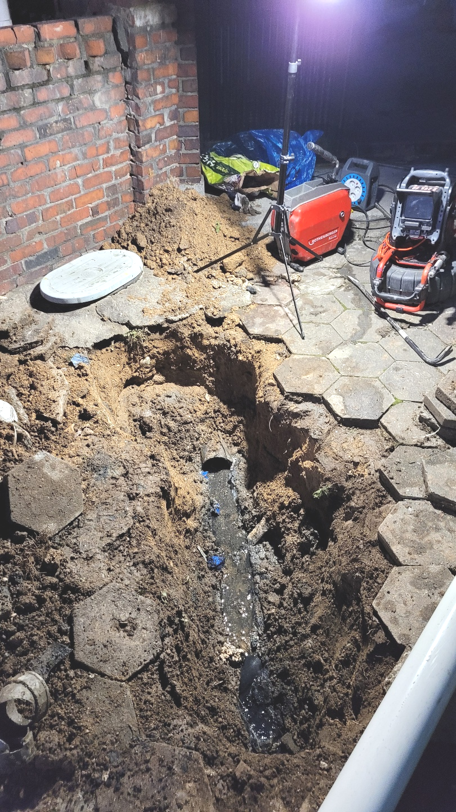
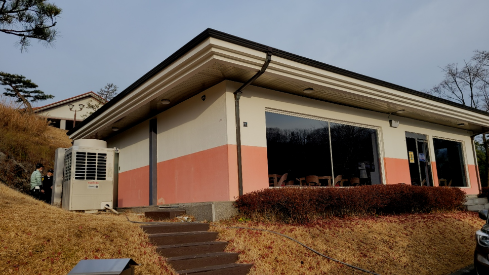

🏠 화성 정남 하수구막힘뚫음 팔탄 하수구설비업체
화성 팔탄 싱크대막힘 전문 시공 후기

📋 작업 개요
- 위치: 화성 팔탄, 팔탄, 화성
- 서비스 유형: 싱크대막힘, 변기막힘, 하수구막힘, 배관막힘, 누수수리, 역류해결, 뚫는업체, 배관청소, 고압세척
- 작업 일시: 2023. 9. 9. 13:09
- 업체명: 하수구수사대 (010-5615-2118)
🔍 문제 상황
하수구를 오래 사용하신다면 이물질도 그만큼 오랜시간 누적면서 때론 막힘및 역류가 발생하기도 한답니다.
조급한 나머지 무조건 행동을 취하고 다양한 업체를 찾아보고 이러다 보면 시간이 더 지연되어 상태가 좋아지기보다 악화되는 경우도 생깁니다. 이럴때는 고민만하지 마시고 전문가에게 곧바로 문의하시길 추천드려요.
화성 정남 하수구막힘뚫음 팔탄 하수구설비업체
가정집은 물론 상가처럼 큰 건물이나 업체 건물처럼 하수구자체가 큼지막한 곳도 자주 나가서 작업을 합니다. 가정집도 예외 없으면 준비성은 기본이고 금액에 관련해서 우려되시는 분들을위해 기본적으로 유선안내해 드리고 있습니다.

🔎 원인 분석
💡 전문가 진단: 화성 정남 하수구막힘뚫음 팔탄 하수구설비업체
수년 동안 돌아다니며 많은 막힘 현장을 경험했지만 조금씩 작업 방법에는 차이가 있었습니다. 작업을 하는 중에 예기치 못한 사태가 발생하는 일이 대다수입니다. 이때 민첩하게 대응하지 못한다면 뚫지 못한 흔적들만 남기게 되는 것입니다.
대부분의 이물질은 기름때로 인해 생기지만 물티슈,머리카락 등등 다향한 이물질 또는 노후된 배관으로 인해 문제가 되는 경우도 있어서 장비와 실력이 출중한 전문업체를 통해서 해결해 보시기 바랍니다.
간단한 석션 작업만으로 제거할 수 있었던 이물질도 내버려 두게 되면 나중에는 배관 스케일링을 받아야 하는 상황까지 이어질 수 있습니다. 또한 역류가 일어난 상황으로 번지면 아래층에까지 피해를 주게 되어 피해 보상까지도 해줘야 할 수 있습니다.
배관 안에 있는 것이 무엇인지 파악도 못해놓고 통수만 해준다면 다시 막혀버리게 되는 경우의 수만 늘어나게 되겠죠. 스케일링을 할 때는 여러 번 받을게 아니라 딱 한 번만으로 해결해야 해요.
하수구막힘이 발생하였다고 해서 무조건 셀프로 뚫어보시거나 단순하게 스프링 기기를 이용하는 방법은 정확한 문제를 해결하는 방법이 아닙니다. 현장의 문제를 정확히 파악한 후 적절한 방법을 통해서 해결해야만 비로소 모든 문제의 원인을 해결할 수 있습니다.

🔧 작업 과정
배수관으로 배수가 안되거나 느리게 넘치고 있다면 이러한 것들을 고쳐드리는 경력자를 찾아내서 실력자를 이용하셔야 합니다. 무수히도 많은 업체들이 있는데 업차마다 다른 점이 있어서 신중을 기해야 합니다.
오직 뚫어버리는것만 하지않고 트랩을설치하거나 큰작업까지도 일상에서 중요한 전부를해드리고있어요.혼자서하시기 어려우시면 저희팀에게 의뢰하시면돼요 복잡한현장이라도 열의를다해 뚫어드리고있어요.
갑자기물샘증상이 나타는게 하수도라서 1년동안은 당연하고 24시간언제든지 응대하고있어요. 급하시다면 무슨상태이든지 신속하게내방하는곳이 간절할수밖에없어요.
서비스면을 위주로 두고있기때문에 수리를도와드린후 재발해버린다면 변기막힘등의 잘못된버릇으로 막힌것외에는 12개월간 무료수리까지 마다하지않는답니다
건축물바깥에 배출되지않고 집안쪽에 누수가발생되기에 장판을상하게하면서 아랫세대쪽에도 문제가발생됩니다,다같이이용하는 공동하수관이면 같은건물사람들이 사용하지못하기에 모든부분에서 손해가발생돼요.
배관을 청소하고 나서라도 다시금 이런 행동들이 반복된다면 하수구 막힘은 언제든 발생될 수 있기 때문입니다. 관리인분께서는 청소하시는 분들에게 이런 사항을 꼭 전달해야겠다며, 그래도 다행히 빠르게 수습이 되어 감사하다는 말씀을 전해주셨습니다.
그런데 마지막 구간에 이르러서 어찌 된 일인지 장비가 힘을 발휘하지 못하는 느낌이 들었습니다. 지금까지 빠르게 이물질을 제거하던 고압세척기인데 무슨 일이 생긴 걸까. 이런 경우 무리해서 압력을 계속 주는 것은 현명하지 못합니다.


✅ 작업 완료
단단한 기름들이 분쇄되고 셕션으로 이물질을 흡입하는 반복작업이 이루어 진뒤 배관 내부를 내시경카메라를 투입하여 직접 눈으로 배관 상태를 파악합니다. 내시경카메라를 보면서 플렉스샤프트를 슬러지가 남아있는곳을 정확하게 찾아내어 기름제거를 추가로 실시해요.
싱크대, 변기, 세면대 등등 배수가 필요한 모든 공간이라면 어디든지 출동하여 신속하게 문제를 해결해 드리고 있으므로 실력 있는 전문 업체를 찾고 계시다면 문의하시기 바랍니다.




⚠️ 베란다 누수 및 방수 관리 방법
- ✅ 비가 많이 올 때 창틀 주변이나 아래층 천장에 얼룩이 생기는지 정기적으로 확인해 보세요.
- ✅ 우수관 주변 실리콘 마감이 들뜨거나 깨진 틈새가 있는지 손상 여부를 수시로 체크하세요.
- ✅ 베란다 바닥 타일의 줄눈(메지)이 소실되면 그 틈으로 물이 침투하여 누수가 유발됩니다.
- ✅ 누수 의심 증상 발견 시 방치하면 아래층 손실이 커지므로 즉시 전문가의 진단을 받으십시오.
💡 핵심 정리
- 확실한 장비 작업(내시경 점검 및 샤프트 스케일링)으로 원인을 뿌리 뽑습니다.
- 작업 후 1년 이내에 동일한 부위 재발 시 100% 무상 A/S 서비스를 보장합니다.
- 서울 · 경기 · 인천 전 지역에 24시간 언제든 긴급 출동할 수 있도록 항시 대기 중입니다.
❓ 자주 묻는 질문 (FAQ)
🚨 화성 팔탄 싱크대막힘 문제로 고민이신가요?
정확한 원인 진단과 확실한 시공으로 재발 없는 해결을 약속드립니다.
24시간 긴급 출동 | 서울 · 경기 · 인천 전지역 | 1년 내 재발 시 무상 A/S